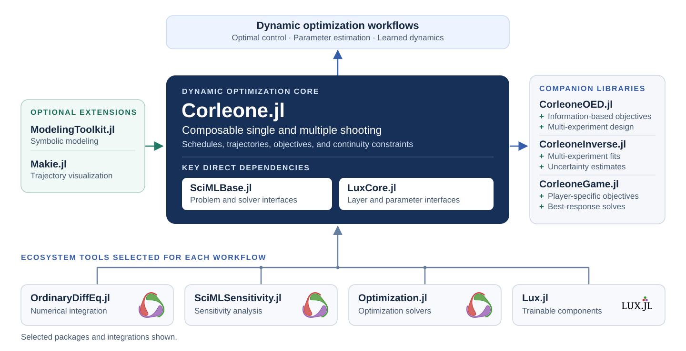

Corleone.jl
Modular shooting for dynamic optimization and scientific machine learning
Build dynamic optimization problems with SciML solvers and Lux models.
Optimal control
Optimize piecewise-constant controls, free initial states, and stage durations with single or multiple shooting.
Parameter estimation
Fit model parameters to measurements from one or many experiments, with priors, transforms, and uncertainty estimates in CorleoneInverse.
Experimental design
Choose controls and measurement times that make parameters identifiable with CorleoneOED.
Scientific machine learning
Embed Lux neural networks in the dynamics and train them like any other parameter.
Symbolic models
Write dynamics, integral costs, and constraints in ModelingToolkit and let Corleone build the shooting problem.
Fast derivatives
Use ForwardDiff, ReverseDiff, or Zygote, sparse Jacobians and Hessians, and threaded or distributed shooting.
Differentiable shooting for dynamic optimization
Corleone turns a differential-equation solve into a Lux layer. You declare which parameters are controls, which initial states are free, and where the horizon is split into shooting segments; Corleone builds the layer, and Optimization.jl or NonlinearSolve.jl chooses the values. The same layer serves optimal control, parameter estimation, optimal experimental design, and universal differential equations.
New to Corleone? Getting Started builds and optimizes a first problem in a few lines. The tutorials work through complete applications, the Manual explains each building block, starting with parameter schedules, and the API reference lists every exported function. CorleoneInverse and CorleoneOED add parameter estimation and experimental design.
How the pieces fit together
Corleone sits between the SciML solvers and Lux. Its key dependencies are the problem and layer interfaces of SciMLBase and LuxCore; you choose the integrator, sensitivity method, optimizer, and neural-network components for each problem. CorleoneOED and CorleoneInverse build on the same shooting layers, and ModelingToolkit and Makie support is loaded as package extensions.
